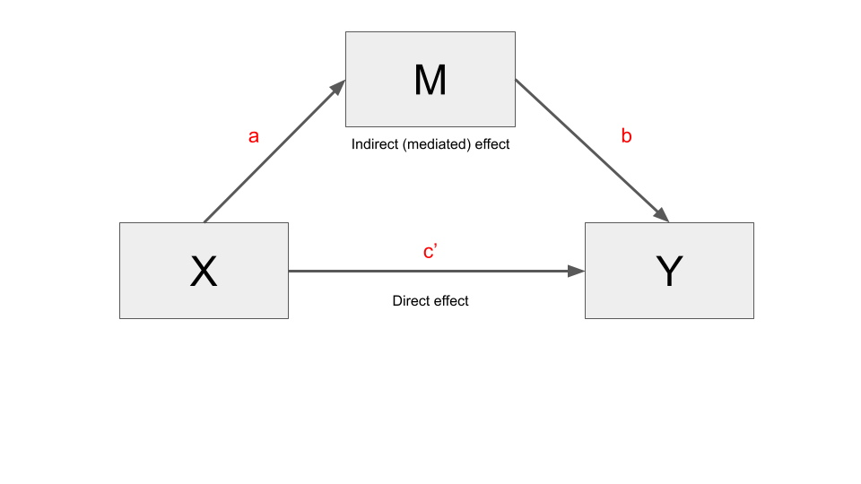
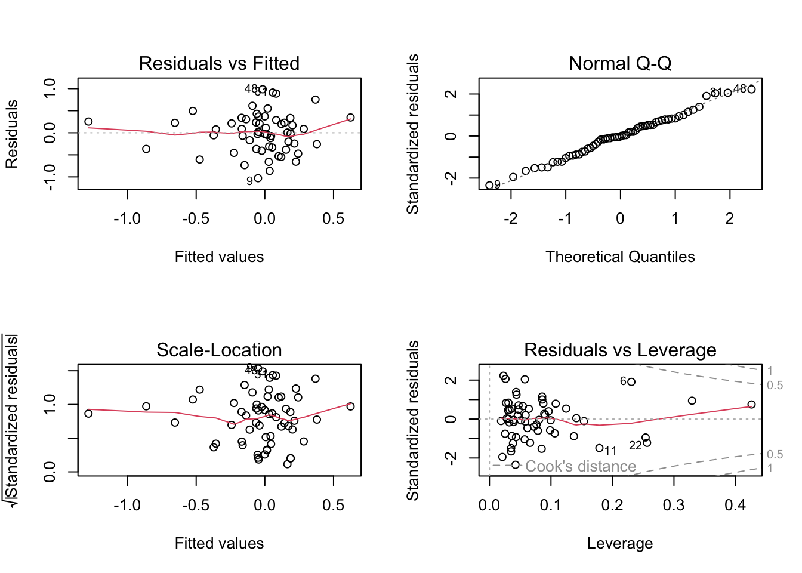

Conditional process
Learning goals
- Learning the concept of conditional process with particular attention to conditional direct and indirect effects, and relative conditional direct and indirect effects.
- Learn to fit conditional process models.
- Learn to interpret the output of conditional process models.
- Learn how to test regression assumptions.
The concept of conditional process
Conditional processes analysis is a combination of mediation and moderation analysis.
- Mediation analysis is intended to understand the mechanisms through which \(X\) impacts \(Y\). It is characterized by direct and indirect effects.
- Moderation analysis consists in understanding the conditions which alter the relationship between \(X\) and \(Y\). It is characterized by conditional effect.
- Conditional process analysis is used to understand the conditions that affect the mechanisms by which a variable transmits its its effect on another. It is characterized by conditional direct and indirect effect.
When multicategorical variables are involved in the process, the effects are called relative conditional direct and indirect effects.
It is also called “moderated mediation”. Due to the complexity of human and social processes, conditional process models may generally be more appropriate than mediation and moderation models only.
Conceptual diagram
The diagram of the conditional process is also a combination of mediation and moderation diagrams. Basically, starting from a mediation model, a conditional process model is created when one or more relations are conditioned by a moderator variable.
Types of conditional process
There are three principal cases of conditional processes:
- Moderation only applies to the direct effect of a mediation model. In this case we have a conditional direct effect.
- Moderation only applies to the indirect effect. In this case we have a conditional indirect effect.
- Moderation applies to both the direct and indirect effect. In this case we have both conditional direct and indirect effects.
Given that conditional direct and indirect effects are a combination of mediation and moderation effects, it may be helpful to briefly summarize them in order to better understand the former.
Recap of direct and indirect effects
A mediation model divides the total effect (\(c\)) of \(X\) on \(Y\) into a direct effect (\(c'\)) and indirect effect (\(a*b\)), such that \(c = c' + a*b\).

In greater detail:
- The direct effect (\(c'\)) quantifies the change in the estimate of \(Y\) for a one-unit change in \(X\), partialing out the effect of other variables in the model (i.e., the mediator \(M\), and other possible covariates).
- The indirect effect quantifies the effect of \(X\) on \(Y\) through \(M\), independent of the direct effect of \(X\) on \(Y\) and possible covariates. It is denoted as \(ab\) and results from the product of the coefficients \(a\) and \(b\) (indirect effect = \(a * b\)).
- The total effect is the effect of \(X\) on \(Y\) in a model that does not include \(M\). It is denoted as \(c\). It is the sum of the direct and indirect effect: \(c = c' + ab\).
Recap of conditional effects
In a moderation model, the effect of \(X\) on \(Y\) is conditional on the values of a moderator \(W\). This means that the effect of \(X\) on \(Y\) is expressed as a function, which we called theta (\(\theta\)).
Given a simple moderation model, the conditional effect of \(X\) on \(Y\) is expressed as the regression coefficient of \(X\) plus the coefficient of the interaction term \(XW\), multiplied by the value of \(W\).
In more detail:
In moderation models, the effect of \(X\) on \(Y\) is no more expressed by a single coefficient, but by a function. A function is just a mathematical “mechanism” that transforms inputs into outputs (for instance, multiplication is a function whose inputs are two numbers, the multiplicand and the multiplier, which are converted into a number called the “product”).
The conditional effect is a function whose output quantifies how the effect of the independent variable \(X\) on the dependent variable \(Y\) changes as the moderator increases by one unit. We have denoted this function with the Greek letter “theta”(\(\theta_{X \to Y}\)).
Perhaps the best way to understand the conditional effect is to look at the regression equation.
Consider a regression model with an independent \(X\) variable and a dependent \(Y\) variable that also includes a \(W\) moderator. The relationship between \(X\) and \(Y\) is moderated. This regression model includes the coefficient of \(X\), that of \(W\) and the one of the interaction between \(X\) and \(W\) (\(XW\)).
\[\hat Y = b_1X + b_2W + b_3XW\]
In a regression model without moderation there is no interaction between \(X\) and \(W\). The effect of \(X\) on \(Y\) is expressed by a single coefficient, that of \(X\) (\(b_1X\)). Instead, in a moderation model, the effect of \(X\) is expressed by both \(b_1X\) and the interaction term \(b_3XW\). To find the effect of \(X\) on \(Y\) we have to collect the terms involving \(X\) and then factoring out \(X\).
\[\hat Y = (b_1 + b_3W)X + b_2W\]
We can see that the effect of \(X\) on \(Y\) is no more a number, as in a regression model without interaction, but a function: \((b_1 + b_3W)\).
\[\theta_{X \to Y} = b_1 + b_3W\]
The output of the function depends on the value of \(W\). For instance, consider \(b_1\) the coefficient of \(X\) = negemot = 0.120, and \(b_3\) the coefficient of the interaction term \(W\) = 0.006. By plugging these values into the function of the conditional effect, we can see that the output varies depending on the values of \(W\) (this procedure is also known as the pick-a-point method, which is used to probe the interaction). The output of the function is the conditional effect of \(X\) on \(Y\):
\[\theta_{X \to Y} = 0.120 + 0.006W \]
theta <- function(W){0.120 + 0.006*W}
W <- c(30,50,70)
data.frame("Age" = W, "Conditional_Effect" = theta(W)) Age Conditional_Effect
1 30 0.30
2 50 0.42
3 70 0.54Conditional indirect/direct effect
In the conditional process analysis, the conditional effect is used to determine direct and/or indirect effects.
Once you are familiar with mediation and moderation models, the intuition behind conditional process models is straightforward. When one of the paths of a mediation model is moderated, the corresponding direct or indirect effect becomes a conditional effect (\(\theta\)). This conditional effect is then used in the mediation model to determine the corresponding direct or indirect effect.
For instance, if the \(a\) path is moderated, the indirect effect \(a*b\) is computed as \(\theta * b\). Likewise, if the direct effect \(c'\) is moderate, it will be expressed by means of a conditional effect function.
As a result, direct and indirect effects, now conditional direct and indirect effects, are analyzed using the statistical instruments of moderation analysis, such as the pick-a-point approach and the Johnson-Neyman significance regions.
So not only are the diagrams and effects of conditional process models a mixture of mediation and moderation models. The output of a conditional process model fitted with PROCESS, and its interpretation, is also a blend of the results of the mediation and moderation models.
In the following sections, we discuss the conditional direct effect model, the conditional indirect effect model, and the conditional direct and indirect effect model.
Conditional direct effect
The conceptual and statistical diagram for a model with only a conditional direct effect is the following.
The model comprises four variables, \(X\), \(Y\), \(M\), and the moderator \(W\). Like any simple mediation model, it consists of two equations, one for each outcome variable (\(M\) and \(Y\)).
\[M = i_M + aX + e_M\] \[Y = i_Y + c'_1X + c'_2W + c'_3XW + bM + e_Y\]
The outcome of the first equation is \(M\), which is predicted by \(X\). The outcome of the second equation is \(Y\), which is predicted by both \(X\) and \(M\). Additionally, the relationship between \(X\) and \(Y\) is moderated by \(W\), so the second model also includes the variable \(W\) and the interaction term \(XW\).
For clarity, we can ignore the intercept \(i_M\) and the error term \(e_Y\).
Only the second equation comprises a conditional effect, because only that equation has a moderator. More precisely, moderator \(W\) moderates the direct effect between \(X\) and \(Y\). This is therefore a conditional direct effect, which is now expressed by a function instead of the single coefficient \(c'\). We can find the effect by grouping terms in the equation involving \(X\) and then factoring out \(X\):
\[\hat Y = c'_1X + c'_2W + c'_3XW + bM\] \[\hat Y = (c'_1 + c'_3W)X + c'_2W + + bM\]
The conditional direct effect of \(X\) on \(Y\) is represented by the function between round brackets:
\[\theta_{X \to Y} = c'_1 + c'_3W\]
It quantifies how the effect of \(X\) on \(Y\) changes independent of the mediator \(M\) (which is kept constant) for a one-unit change of \(W\).
Conditional indirect effect
This is the conceptual and statistical diagram for a model with only a conditional indirect effect:

The model comprises four variables, \(X\), \(Y\), \(M\), and the moderator \(W\). Like a simple mediation model, it consists of two equations, one for each outcome variable (\(M\) and \(Y\)).
The outcome of the first equation is \(M\), which is predicted by \(X\). The outcome of the second equation is \(Y\), which is predicted by both \(X\) and \(M\). Additionally, the relationship between \(M\) and \(Y\) is moderated by \(W\), so the second model also includes the variable \(W\) and the interaction term \(MW\).
\[M = i_M + aX + e_M\] \[Y = i_Y + c'_1X + b_1M + b_2W + b_3MW + e_Y\]
For clarity, we can ignore the intercept \(i_M\) and the error term \(e_Y\).
Only the second equation comprises a moderating effect and, consequently, a conditional effect. Moderator W moderates the relation between \(M\) and \(Y\), so we can find this effect by grouping the M terms together.
\[\hat Y = c'_1X + b_1M + b_2W + b_3MW\] \[\hat Y = c'_1X + (b_1 + b_3W)M + b_2W\]
The conditional effect is represented by the function within parentheses:
\[\theta_{M \to Y} = b_1 + b_3W\]
This conditional indirect effect quantifies how differences in \(X\) map onto differences in \(Y\) indirectly through M depending on the value of \(W\).
The moderated relation contributes to define the indirect effect. In a simple mediation model, the indirect effect is defined as the product between the coefficients \(a\) and \(b\), \(ab = a * b\). In this conditional process model, \(b\) is no more a single coefficient but a function, i.e., the function defining the conditional effect. It follows that the conditional indirect effect is the product between \(a\) and the conditional effect \(\theta_{M \to Y} = b_1 + b_3W\), and its value is conditional on W:
\[a(b_1 + b_3W) = ab_1 + a_b3W\]
The following is the conceptual and statistical diagram for a model with a conditional direct and indirect effect:
The model comprises five variables, \(X\), \(Y\), \(M\), and the moderators \(W\) and \(Z\). Like a simple mediation model, it consists of two equations, one for each outcome variable (\(M\) and \(Y\)).
The outcome of the first equation is \(M\), which is predicted by \(X\). Additionally, \(W\) moderates the relation between \(X\) and \(M\), so the model includes the coefficient for \(W\) and the interaction between \(X\) and \(W\).
\[M = i_M + a_1X + a_2W + a_3XW + e_M\]
The outcome of the second equation is \(Y\), which is predicted by both \(X\) and \(M\). Additionally, the relationship between \(M\) and \(Y\) is moderated by \(Z\), and so it is the relationship between \(X\) and \(Y\). SO the model includes the coefficient for \(Z\), and those for the interaction between \(X\) and \(Z\) (\(XZ\)), and \(M\) and \(Z\) (\(MZ\)):
\[Y = i_Y + c'_1X + c'_2Z + c'_3XZ + b_1M + b_2MZ + e_Y\]
For clarity, we can ignore intercepts and error terms.
As we have interactions in both equations, they both include conditional effects. More precisely, the first equation includes a conditional indirect effect, and the second a conditional direct and indirect effect.
Starting from the first equation, we can find the conditional indirect effects by grouping \(X\) terms and factoring out \(X\):
\[\hat M = a_1X + a_2W + a_3XW\] \[\hat M = (a_1 + a_3W)X + a_2W\] \[\theta_{X \to M} = a_1 + a_3W\]
Considering the second equation, we can find the conditional indirect effects by grouping the \(X\) terms and factoring out \(X\), and the conditional indirect effects by grouping the \(M\) terms and factoring out \(M\):
\[Y = c'_1X + c'_2Z + c'_3XZ + b_1M + b_2MZ\] \[Y = (c'_1 + c'_3Z)X + (b_1 + b_2Z)M + + c'_2Z\]
The two conditional effects are within parentheses. The conditional direct effect and and the conditional indirect effect is the former (\(\theta_{X \to Y}\)) and the latter (\(\theta_{M \to Y}\)), respectively:
\[\theta_{X \to Y} = c'_1 + c'_3Z\] \[\theta_{M \to Y} = b_1 + b_2Z\]
As previously explained, given a mediation model \(X \to M \to Y\) with coefficient \(a\) (path from \(X\) to \(M\)) and \(b\) (path from \(M\) to \(Y\)), the indirect effect of \(X\) on \(Y\) is the product between \(a\) and \(b\) \(ab = a * b\). The conditional indirect effect is the product of the same paths where one or both are dependent on a moderator and are therefore represented by conditional effects. In our case, both the paths are conditioned on a moderator (respectively \(W\) and \(Z\)), so the indirect effect is the product of these conditional effects:
\[\theta_{X \to M} * \theta_{M \to Y}\] \[(a_1 + a_3W) * (b_1 + b_2Z)\] \[a_1b_1 + a_1b_2Z + a_3b_1W + a_3b_2WZ\]
Moderation of a specific indirect effect in a parallel multiple mediator model
There are also more complicated models, such as parallel multiple mediator models involving one moderator that moderates one of the mediated effects. The model depicted below, for instance, includes three outcomes and three equations. The book provides further details.
We will now examine how to fit and interpret conditional indirect effect models, conditional indirect and direct effect models, and conditional models with multicategorical variables.
Example
In the following example we’ll use the dataset \(TEAMS\) to fit a conditional indirect effect model.
teams <- haven::read_sav("data/teams.sav")The data comes from a study on work teams. The goal was to examine the mechanism by which the dysfunctional behavior of members of a work team (dysfunc = \(X\)) can negatively affect the ability of a work team to perform well (perform = \(Y\)). The researchers proposed a mediation model in which dysfunctional behavior (\(X\)) leads to a work environment filled with negative emotions (negtone = \(M\)) that supervisors and other employees confront and attempt to manage, which then distracts from work and interferes with task performance (\(Y\)).
However, according to the authors’ model, when team members are able to regulate their display of negative emotions (negexp = \(W\)), essentially hiding how they are feeling from others, this allows the team to stay focused on the task at hand rather than having to shift focus toward managing the negative tone of the work environment and the feelings of others.
That is, the effect of negative affective tone of the work environment on team performance is hypothesized in their model as contingent on the ability of the team members to hide their feelings from the team, with a stronger negative effect of negative affective tone on performance in teams that express their negativity rather than conceal it.
Conditional indirect effect model with process
The describe model can be fitted in process by using model = 14.
source("PROCESS_R/process.R")
********************* PROCESS for R Version 4.0.1 *********************
Written by Andrew F. Hayes, Ph.D. www.afhayes.com
Documentation available in Hayes (2022). www.guilford.com/p/hayes3
***********************************************************************
PROCESS is now ready for use.
Copyright 2021 by Andrew F. Hayes ALL RIGHTS RESERVED
process(y = "perform", x = "dysfunc", m = "negtone", w = "negexp",
model = 14,
jn = 1,
plot = 1,
decimals = 10.2,
seed=42517,
boot = 5000, # number of bootstraps
progress = 0,
data = teams)
********************* PROCESS for R Version 4.0.1 *********************
Written by Andrew F. Hayes, Ph.D. www.afhayes.com
Documentation available in Hayes (2022). www.guilford.com/p/hayes3
***********************************************************************
Model : 14
Y : perform
X : dysfunc
M : negtone
W : negexp
Sample size: 60
Custom seed: 42517
***********************************************************************
Outcome Variable: negtone
Model Summary:
R R-sq MSE F df1 df2 p
0.44 0.19 0.23 13.80 1.00 58.00 0.00
Model:
coeff se t p LLCI ULCI
constant 0.03 0.06 0.42 0.68 -0.10 0.15
dysfunc 0.62 0.17 3.71 0.00 0.29 0.95
***********************************************************************
Outcome Variable: perform
Model Summary:
R R-sq MSE F df1 df2 p
0.56 0.31 0.20 6.24 4.00 55.00 0.00
Model:
coeff se t p LLCI ULCI
constant -0.01 0.06 -0.20 0.84 -0.13 0.11
dysfunc 0.37 0.18 2.06 0.04 0.01 0.72
negtone -0.44 0.13 -3.34 0.00 -0.70 -0.17
negexp -0.02 0.12 -0.16 0.87 -0.25 0.22
Int_1 -0.52 0.24 -2.15 0.04 -1.00 -0.03
Product terms key:
Int_1 : negtone x negexp
Test(s) of highest order unconditional interaction(s):
R2-chng F df1 df2 p
M*W 0.06 4.60 1.00 55.00 0.04
----------
Focal predictor: negtone (M)
Moderator: negexp (W)
Conditional effects of the focal predictor at values of the moderator(s):
negexp effect se t p LLCI ULCI
-0.53 -0.16 0.21 -0.77 0.44 -0.58 0.26
-0.06 -0.40 0.14 -2.98 0.00 -0.68 -0.13
0.60 -0.75 0.16 -4.59 0.00 -1.07 -0.42
Moderator value(s) defining Johnson-Neyman significance region(s):
Value % below % above
-0.23 35.00 65.00
Conditional effect of focal predictor at values of the moderator:
negexp effect se t p LLCI ULCI
-1.16 0.16 0.34 0.48 0.63 -0.52 0.85
-1.06 0.11 0.32 0.34 0.73 -0.53 0.75
-0.95 0.06 0.30 0.19 0.85 -0.54 0.65
-0.85 0.00 0.27 0.01 0.99 -0.55 0.55
-0.74 -0.05 0.25 -0.21 0.84 -0.56 0.45
-0.64 -0.11 0.23 -0.46 0.65 -0.57 0.35
-0.53 -0.16 0.21 -0.77 0.45 -0.58 0.26
-0.43 -0.21 0.19 -1.13 0.26 -0.59 0.17
-0.32 -0.27 0.17 -1.57 0.12 -0.61 0.08
-0.23 -0.31 0.16 -2.00 0.05 -0.63 -0.00
-0.22 -0.32 0.16 -2.08 0.04 -0.63 -0.01
-0.11 -0.38 0.14 -2.66 0.01 -0.66 -0.09
-0.01 -0.43 0.13 -3.28 0.00 -0.69 -0.17
0.09 -0.48 0.13 -3.86 0.00 -0.74 -0.23
0.20 -0.54 0.12 -4.32 0.00 -0.79 -0.29
0.30 -0.59 0.13 -4.60 0.00 -0.85 -0.33
0.41 -0.65 0.14 -4.71 0.00 -0.92 -0.37
0.51 -0.70 0.15 -4.68 0.00 -1.00 -0.40
0.62 -0.75 0.17 -4.57 0.00 -1.09 -0.42
0.72 -0.81 0.18 -4.42 0.00 -1.17 -0.44
0.83 -0.86 0.20 -4.27 0.00 -1.27 -0.46
0.93 -0.92 0.22 -4.12 0.00 -1.36 -0.47
Data for visualizing the conditional effect of the focal predictor:
negtone negexp perform
-0.45 -0.53 0.08
-0.04 -0.53 0.02
0.52 -0.53 -0.07
-0.45 -0.06 0.18
-0.04 -0.06 0.02
0.52 -0.06 -0.21
-0.45 0.60 0.32
-0.04 0.60 0.02
0.52 0.60 -0.40
***********************************************************************
Bootstrapping in progress. Please wait.
**************** DIRECT AND INDIRECT EFFECTS OF X ON Y ****************
Direct effect of X on Y:
effect se t p LLCI ULCI
0.37 0.18 2.06 0.04 0.01 0.72
Conditional indirect effects of X on Y:
INDIRECT EFFECT:
dysfunc -> negtone -> perform
negexp Effect BootSE BootLLCI BootULCI
-0.53 -0.10 0.15 -0.37 0.24
-0.06 -0.25 0.12 -0.49 -0.04
0.60 -0.46 0.17 -0.81 -0.15
Index of moderated mediation:
Index BootSE BootLLCI BootULCI
negexp -0.32 0.19 -0.76 -0.04
---
******************** ANALYSIS NOTES AND ERRORS ************************
Level of confidence for all confidence intervals in output: 95
Number of bootstraps for percentile bootstrap confidence intervals: 5000
W values in conditional tables are the 16th, 50th, and 84th percentiles.The output includes:
Summary statistics of the model (model summary);
Two regression tables with the coefficients for the first model (outcome:
negtone) and the second (outcome:perform);Tables resulting from the pick-a-point and the Johnson-Neyman technique;
Data to visualize the moderation effect;
Tables on the direct and indirect effect.
Conditional indirect effect
Looking at the two regression tables, the model can be written as:
\[M = i_M + aX\] \[Y = i_Y + c'X + b_1M + b_2W + b_3MW + e_Y\]
In a simple mediation model, the conditional indirect effect is the product between \(a\) (the path from \(X\) to \(M\)) and \(b\) (the path from \(M\) to \(Y\)). Here \(a\) corresponds to \(a\) and \(b\) to \(b_1\).
Whereas the path \(X \to M\) is not moderated and therefore \(a\) is a simple coefficient, the path \(M \to Y\) is moderated by W and therefore \(b_1\) is a conditional effect expressed through a function, we can denote as \(\theta_{M \to Y}\).
We can find the conditional effect by grouping the \(M\) terms and factoring out \(M\) (we ignore the intercept and error term).
\[\hat Y = c'X + b_1M + b_2W + b_3MW\] \[\hat Y = c'X + (b_1 + b_3W)M + b_2W\] \[\theta_{M \to Y} = b_1 + b_3W\]
Conditional effect
The conditional effect \(\theta_{M \to Y} = b_1 + b_3W\) represents the moderation effect. As in a simple moderation model, it is analyzed in the second part of the output. Here you will find the table Conditional effects of the focal predictor at values of the moderator(s) (resulting from the pick-a-point approach), and the table Johnson-Neyman significance regions.
Consider the table Conditional effects of the focal predictor at values of the moderator(s). The function just identified for the conditional effect can be used to test the effect of \(M\) on \(Y\) at different levels of the moderator \(W\). For example, at relatively low (-0.53), moderate (-0.06), and relatively high (0.60) level of the moderator, we obtain:
cond_ind_effect <- function(W) { -0.44 + -0.52*W }
moderator_values <- c(-0.53, -0.06, 0.60)
sapply(moderator_values, cond_ind_effect)[1] -0.1644 -0.4088 -0.7520Conditional indirect effect
We can now find the conditional indirect effect by multiplying the conditional effect \(\theta_{M \to Y}\) by \(a\). Here \(a\) is the coefficient of dysfunc (first regression table, dysfunc = 0.62), \(b_1\) is the coefficient of negtone (\(M \to Y\)) (second regression table negtone = -0.44), and \(b_3\) is the coefficient of the interaction term (second regression table, Int_1 = -0.52).
\[a\theta_{M \to Y}\] \[a(b_1 + b_3W)\] \[0.62(-0.44 + -0.52W)\]
The conditional indirect effect is analyzed through a pick-a-point approach: various values of the moderator W are plugged into the function of the conditional indirect effect (\(0.62(-0.44 + -0.52W)\)). A significance test is subsequently conducted. The results are presented in the last section of the output. The table Conditional indirect effects of \(X\) on \(Y\) shows the changes in the \(Y\) estimates for a one-unit change in \(X\) through the mediator \(M\) at different levels of the moderator (Using Hayes’ own words: “the conditional indirect effect of X on Y through M conditioned on W quantifies the amount by which two cases with a given value of W that differ by one unit on X are estimated to differ on Y indirectly through X’s effect on M, which in turn influences Y.”).
In practice, the table can be read as follows: “at relatively low levels of emotional expressiveness (the moderator) there is no evidence of an effect of dysfunctional behavior on performance through negative emotional tone (-0.53, 95% CI [-0.37, 0.24]). Instead, at moderate (-0.06, 95% CI [-0.49, 0.04]) to relatively high (0.60, 95% CI [-0.81, -0.15]) levels of emotional expressivity, the effect is statistically significant, with higher levels of emotional expressiveness leading to worse team performance.
The Index of moderated mediation is displayed right below the pick-a-point table. It provides the results of a more general significance test of the relationship between the moderator and the indirect effect. When zero is not within the range of the confidence interval, it can be concluded that the indirect effect is associated with the moderator. Had the confidence interval included zero, we could not definitively claim that the indirect effect was related to the moderator.
In this case the “index” is negative, which leads to the conclusion that the indirect effect is negatively related to the moderator. That is, the mediation of the effect of dysfunctional team behavior on performance through negative affective tone of the work climate is moderated by the expressiveness of the team.
The Index of moderated mediation is displayed if \(W\) is specified as a moderator of only one of the paths that define the indirect effect. Otherwise, the indirect effect will be a nonlinear function of \(W\). In that case, process will not produce this index.
In the section of the output there is also the direct effect of \(X\) on \(Y\). In this case it is not affected by the moderator and can be interpreted as in a simple mediation model.
Visualize the conditional effect
Visualization data are provided for the moderation effect, as in a simple moderation model, and can be plotted as learned in the previous lectures.
Instead, process does not provide data for visualization of the indirect or direct conditional effect. If you want to create this picture, you need to do it yourself. That takes a little more familiarity with R. However, there is no need to create the chart because the relevant information is provided in the tables.
The dataset that allows visualization of the data must contain two columns. The former should contain the values of the direct effect and the latter the values for the indirect effect at the moderator levels. Data should be generated with the function of the direct and/or indirect conditional effect, if the direct and/or indirect effect is affected by a moderator. The function has to be identified in the equation of the model as described above.
The plot consists of the following structure: the effects are on the vertical axis and the values of the moderator on the horizontal axis. Additionally, different types of lines should distinguish the direct and indirect effects.
We already found the function (conditional effect) needed to calculate the indirect effect \(a(b_1 + b_3W)\), resulting in the function \(-0.2728 -0.3224W\).
# INDIRECT EFFECT DATA - - - - - - - - - - - - - - - - - - -
# create a function to calculate the indirect effect
# (based on the model equation)
ind_effect <- function(W) {0.62*(-0.44 + -0.52*W)}
# choose the 16th, 50th, and 86th percentile of the moderator
w1 <- quantile(teams$negexp, 0.16)
w2 <- quantile(teams$negexp, 0.50)
w3 <- quantile(teams$negexp, 0.86)
# apply the function to different levels of W
indirect_effect <- as.vector(sapply(c(w1 , w2, w3), ind_effect))
# DIRECT EFFECT DATA - - - - - - - - - - - - - - - - - - -
# in this case the direct effect is not moderated and is always 0.37
direct_effect <- rep(0.37, 3)
# MERGE DIRECT AND DIRECT EFFECT IN A VECTOR OF LENGTH 6
y <- c(direct_effect, indirect_effect)
# CREATE A VECTOR OF LENGHT 6 TO DISTINGUISH DIRECT AND INDIRECT EFFECT DATA - - -
type <- c(0,0,0,1,1,1)
# CREATE A VECTOR OF LENGHT 6 WITH THE VALUES OF THE MDOERATOR - - - - - - - - - -
w <- c(w1, w2, w3, w1, w2, w3)
plot(y = y, # the effect on the vertical axis
x = w, # values of the moderator on the horizontal axis
pch = 15,
col = "white",
xlab = "Nonverbal negative expressivity",
ylab = "Effect of dysfunctional team behavior on performance",
xlim = c(-0.6, 0.7),
ylim = c(-0.6, 0.5))
legend.txt <- c("Direct effect", "Indirect effect")
legend("bottomleft", legend = legend.txt,
lty = c(1,3), lwd = c(4,3))
lines(w[type==0], y[type==0], lwd = 4, lty = 1)
lines(w[type==1], y[type==1], lwd = 4, lty = 3)
abline(0, 0, lwd = 0.5, lty = 2)Conditional effect
We have already demonstrated that the conditional effect is a component of the conditional indirect effect. On its own, it the conditional effect is composed by two coefficients: that of \(X\) and the interaction term \(X*W\) or Int_1. Int_1 quantifies the degree to which the conditional effect of \(M\) on \(Y\) changes when \(W\) changes by one unit. As \(W\) changes by 1 unit, the conditional effect of \(M\) on \(Y\) changes by the “Int_1 coefficient”, or -0.52 units (p = 0.04).
\[\hat Y = c'X + b_1M + b_2W + b_3MW\] \[\hat Y = c'X + (b_1 + b_3W)M + b_2W\] \[\theta_{M \to Y} = b_1 + b_3W\] \[\theta_{M \to Y} = -0.44 -0.52W\]
As in a simple moderation model, the second section of the result presents the tables devoted to the analysis of the moderating effect.
The conditional effect function is used for probing the interaction at different levels of \(W\). We observe that the interaction is not significant for low levels of the moderator (that is, when people show weak levels of emotional expression). As the moderator is continuous, it is also possible to see the Johnson-Neyman table defining the significant regions. It shows that the moderator begins to exert a significant effect at values greater than -0.23.
Data to visualize the moderation effect is provided. The interaction graph clearly indicates what is already indicated in the table Conditional effects of the focal predictor at values of the moderator(s). The higher the expressiveness, the greater the negative impact the negative tone has on the team’s performance. Or vice-versa, the lower the expressiveness, the lower the impact of negative emotions on team performance.
x <- c(-0.45, -0.04, 0.52, -0.45, -0.04, 0.52, -0.45, -0.04, 0.52)
w <- c(-0.53, -0.53, -0.53, -0.06, -0.06, -0.06, 0.60, 0.60, 0.60)
y <- c(0.08, 0.02, -0.07, 0.18, 0.02, -0.21, 0.32, 0.02, -0.40)
plot(y = y, x = x,
pch=15, col="white",
xlab = "Negative Tone of the Work Climate (W)",
ylab = "Team Performance")
legend.txt <- c("Low Expressivity (W=-0.53)",
"Medium Expressivity (W=-0.06)",
"High Expressivity (W=0.60)")
legend("bottomleft", legend=legend.txt,
lty = c(1,2,3), lwd = c(1,2,1))
lines(x[w==-0.53], y[w==-0.53], lwd=1, lty=1)
lines(x[w==-0.06], y[w==-0.06], lwd=2, lty=2)
lines(x[w==0.60], y[w==0.60], lwd=1, lty=3)Other regression coefficients
Consider the coefficients for the variables involved in the interaction. These variables may be identified by looking at the “Product terms key” table. Their coefficients are negtone (\(M\)) = -0.44, and negexp (\(W\)) = -0.02.
As in moderation analysis, each of these coefficients must be interpreted conditional to the other one set to zero. The remaining variables of the model (\(X\), in this case) are maintained constant. For example: considering the set of cases measuring zero in negexp (\(W\)) and held constant on dysfunc, a unit increase in negtone (\(M\)) corresponds to a 0.44 point lower estimate of \(Y\) (-0.44).
A detailed explanation of the rationale for this interpretation was provided in the previous lecture.
Conditional direct and indirect effect model with process
It may be difficult to determine in advance whether moderation affects only the direct or indirect effect. So, it can be wise to start with one model including both. If one of the effects is not significant, it is always possible to prune it from the model and fit a new one with the significant effect.
We are going to use the DISASTER dataset to fit a conditional direct and indirect effect model. The model shown in the diagram below is designated in process as model = 8.
disaster <- haven::read_sav("data/disaster.sav")
process(y = "donate", x = "frame", w = "skeptic", m = "justify",
model = 8,
jn = 1,
plot = 1,
decimals = 10.2,
seed = 280417,
progress = 0,
data = disaster)
********************* PROCESS for R Version 4.0.1 *********************
Written by Andrew F. Hayes, Ph.D. www.afhayes.com
Documentation available in Hayes (2022). www.guilford.com/p/hayes3
***********************************************************************
Model : 8
Y : donate
X : frame
M : justify
W : skeptic
Sample size: 211
Custom seed: 280417
***********************************************************************
Outcome Variable: justify
Model Summary:
R R-sq MSE F df1 df2 p
0.50 0.25 0.66 22.54 3.00 207.00 0.00
Model:
coeff se t p LLCI ULCI
constant 2.45 0.15 16.45 0.00 2.16 2.75
frame -0.56 0.22 -2.58 0.01 -0.99 -0.13
skeptic 0.11 0.04 2.76 0.01 0.03 0.18
Int_1 0.20 0.06 3.64 0.00 0.09 0.31
Product terms key:
Int_1 : frame x skeptic
Test(s) of highest order unconditional interaction(s):
R2-chng F df1 df2 p
X*W 0.05 13.25 1.00 207.00 0.00
----------
Focal predictor: frame (X)
Moderator: skeptic (W)
Conditional effects of the focal predictor at values of the moderator(s):
skeptic effect se t p LLCI ULCI
1.59 -0.24 0.15 -1.62 0.11 -0.54 0.05
2.80 0.00 0.12 0.01 0.99 -0.23 0.23
5.20 0.48 0.15 3.21 0.00 0.19 0.78
Moderator value(s) defining Johnson-Neyman significance region(s):
Value % below % above
1.17 6.64 93.36
3.93 67.77 32.23
Conditional effect of focal predictor at values of the moderator:
skeptic effect se t p LLCI ULCI
1.00 -0.36 0.17 -2.09 0.04 -0.70 -0.02
1.17 -0.33 0.17 -1.97 0.05 -0.65 0.00
1.42 -0.28 0.16 -1.77 0.08 -0.58 0.03
1.84 -0.19 0.14 -1.36 0.17 -0.47 0.09
2.26 -0.11 0.13 -0.84 0.40 -0.36 0.15
2.68 -0.02 0.12 -0.19 0.85 -0.26 0.21
3.11 0.06 0.11 0.55 0.58 -0.16 0.29
3.53 0.15 0.11 1.31 0.19 -0.07 0.37
3.93 0.23 0.12 1.97 0.05 0.00 0.46
3.95 0.23 0.12 1.99 0.05 0.00 0.46
4.37 0.32 0.12 2.54 0.01 0.07 0.56
4.79 0.40 0.14 2.94 0.00 0.13 0.67
5.21 0.49 0.15 3.22 0.00 0.19 0.78
5.63 0.57 0.17 3.41 0.00 0.24 0.90
6.05 0.66 0.19 3.54 0.00 0.29 1.02
6.47 0.74 0.20 3.62 0.00 0.34 1.14
6.89 0.82 0.22 3.68 0.00 0.38 1.27
7.32 0.91 0.24 3.72 0.00 0.43 1.39
7.74 0.99 0.27 3.74 0.00 0.47 1.52
8.16 1.08 0.29 3.76 0.00 0.51 1.64
8.58 1.16 0.31 3.77 0.00 0.56 1.77
9.00 1.25 0.33 3.78 0.00 0.60 1.90
Data for visualizing the conditional effect of the focal predictor:
frame skeptic justify
0.00 1.59 2.62
1.00 1.59 2.38
0.00 2.80 2.75
1.00 2.80 2.75
0.00 5.20 3.00
1.00 5.20 3.48
***********************************************************************
Outcome Variable: donate
Model Summary:
R R-sq MSE F df1 df2 p
0.67 0.45 0.97 42.82 4.00 206.00 0.00
Model:
coeff se t p LLCI ULCI
constant 7.29 0.27 26.64 0.00 6.75 7.83
frame 0.16 0.27 0.60 0.55 -0.37 0.69
justify -0.92 0.08 -10.98 0.00 -1.09 -0.76
skeptic -0.04 0.05 -0.91 0.37 -0.14 0.05
Int_1 0.01 0.07 0.22 0.83 -0.12 0.15
Product terms key:
Int_1 : frame x skeptic
Test(s) of highest order unconditional interaction(s):
R2-chng F df1 df2 p
X*W 0.00 0.05 1.00 206.00 0.83
----------
Focal predictor: frame (X)
Moderator: skeptic (W)
Data for visualizing the conditional effect of the focal predictor:
frame skeptic donate
0.00 1.59 4.58
1.00 1.59 4.76
0.00 2.80 4.53
1.00 2.80 4.73
0.00 5.20 4.43
1.00 5.20 4.66
***********************************************************************
Bootstrapping in progress. Please wait.
**************** DIRECT AND INDIRECT EFFECTS OF X ON Y ****************
Conditional direct effect(s) of X on Y:
skeptic effect se t p LLCI ULCI
1.59 0.18 0.18 1.01 0.31 -0.17 0.54
2.80 0.20 0.14 1.43 0.15 -0.08 0.48
5.20 0.24 0.19 1.28 0.20 -0.13 0.61
Conditional indirect effects of X on Y:
INDIRECT EFFECT:
frame -> justify -> donate
skeptic Effect BootSE BootLLCI BootULCI
1.59 0.22 0.14 -0.05 0.51
2.80 -0.00 0.11 -0.21 0.21
5.20 -0.45 0.16 -0.75 -0.12
Index of moderated mediation:
Index BootSE BootLLCI BootULCI
skeptic -0.19 0.06 -0.30 -0.06
---
******************** ANALYSIS NOTES AND ERRORS ************************
Level of confidence for all confidence intervals in output: 95
Number of bootstraps for percentile bootstrap confidence intervals: 5000
W values in conditional tables are the 16th, 50th, and 84th percentiles.We have two regression tables, each in its own panel, the first one with outcome justify and the second one with outcome donate.
The outcome is essentially the same as the previous one. What is different is that both regression tables include an interaction. Data to visualize the two moderator effects is also provided. The pick-a-point and the Johnson-Neyman tables are only provided for the first regression. The second is relative to the direct effect, which implies that moderation translates into a conditional direct effect, which is analyzed in the last part of the output. We can see here the pick-a-point table of both the direct and indirect effect. The index of moderated mediation is provided for the indirect effect.
The interpretation is the same as before, this time applied to both the direct and indirect effect.
In this analysis, we notice that the conditional indirect effect is significant, while the conditional direct effect is not. Therefore, you can opt to simplify the model by removing the moderation of the direct effect. In this specific case, this can be done by switching from model = 8 to model = 7.
Conditional process analysis with multicategorical antecedent
When a model includes a multicategorical antecedent, the conditional indirect effect and the conditional direct effect are interpreted relatively to the reference category. In that case we talk of relative conditional indirect effect and relative conditional direct effect.
The model shown below can be fitted using model 8. The mcx=1 option tells process that the \(X\) variable is multicategorical. Hayes uses mcx=3, which handles multicategorical variables in a different way. Refer to the book for more information on how process can handle multicategorical variables and the related options (mcx=1, mcx=2, and mcx=3).
We fit the model using the “protest” dataset.
protest <- haven::read_sav("data/protest.sav")
process(y = "liking", x = "protest", m = "respappr", w = "sexism",
mcx = 1,
model = 8,
plot = 1,
decimals = 10.2,
progress = 0,
data = protest)
********************* PROCESS for R Version 4.0.1 *********************
Written by Andrew F. Hayes, Ph.D. www.afhayes.com
Documentation available in Hayes (2022). www.guilford.com/p/hayes3
***********************************************************************
Model : 8
Y : liking
X : protest
M : respappr
W : sexism
Sample size: 129
Random seed: 962884
Coding of categorical X variable for analysis:
protest X1 X2
0.00 0.00 0.00
1.00 1.00 0.00
2.00 0.00 1.00
***********************************************************************
Outcome Variable: respappr
Model Summary:
R R-sq MSE F df1 df2 p
0.56 0.32 1.29 11.34 5.00 123.00 0.00
Model:
coeff se t p LLCI ULCI
constant 6.57 1.20 5.46 0.00 4.19 8.95
X1 -3.78 1.71 -2.21 0.03 -7.16 -0.39
X2 -2.10 1.61 -1.31 0.19 -5.29 1.08
sexism -0.53 0.23 -2.26 0.03 -0.99 -0.06
Int_1 0.98 0.33 2.98 0.00 0.33 1.63
Int_2 0.73 0.31 2.33 0.02 0.11 1.36
Product terms key:
Int_1 : X1 x sexism
Int_2 : X2 x sexism
Test(s) of highest order unconditional interaction(s):
R2-chng F df1 df2 p
X*W 0.05 4.82 2.00 123.00 0.01
----------
Focal predictor: protest (X)
Moderator: sexism (W)
Conditional effects of the focal predictor at values of the moderator(s):
Moderator value(s):
sexism 4.25
effect se t p LLCI ULCI
X1 0.38 0.39 0.98 0.33 -0.39 1.15
X2 1.01 0.35 2.88 0.00 0.32 1.71
Test of equality of conditional means
F df1 df2 p
4.28 2.00 123.00 0.02
Estimated conditional means being compared:
protest respappr
0.00 4.32
1.00 4.70
2.00 5.33
----------
Moderator value(s):
sexism 5.12
effect se t p LLCI ULCI
X1 1.23 0.25 4.92 0.00 0.74 1.73
X2 1.65 0.25 6.71 0.00 1.17 2.14
Test of equality of conditional means
F df1 df2 p
23.96 2.00 123.00 0.00
Estimated conditional means being compared:
protest respappr
0.00 3.86
1.00 5.09
2.00 5.51
----------
Moderator value(s):
sexism 5.90
effect se t p LLCI ULCI
X1 1.99 0.35 5.71 0.00 1.30 2.68
X2 2.22 0.36 6.16 0.00 1.51 2.94
Test of equality of conditional means
F df1 df2 p
22.86 2.00 123.00 0.00
Estimated conditional means being compared:
protest respappr
0.00 3.45
1.00 5.44
2.00 5.67
Data for visualizing the conditional effect of the focal predictor:
protest sexism respappr
0.00 4.25 4.32
1.00 4.25 4.70
2.00 4.25 5.33
0.00 5.12 3.86
1.00 5.12 5.09
2.00 5.12 5.51
0.00 5.90 3.45
1.00 5.90 5.44
2.00 5.90 5.67
***********************************************************************
Outcome Variable: liking
Model Summary:
R R-sq MSE F df1 df2 p
0.54 0.29 0.82 8.18 6.00 122.00 0.00
Model:
coeff se t p LLCI ULCI
constant 5.30 1.07 4.95 0.00 3.18 7.42
X1 -2.74 1.39 -1.97 0.05 -5.50 0.01
X2 -2.72 1.29 -2.10 0.04 -5.28 -0.16
respappr 0.37 0.07 5.10 0.00 0.22 0.51
sexism -0.28 0.19 -1.46 0.15 -0.66 0.10
Int_1 0.54 0.27 2.00 0.05 0.01 1.08
Int_2 0.51 0.26 1.98 0.05 0.00 1.02
Product terms key:
Int_1 : X1 x sexism
Int_2 : X2 x sexism
Test(s) of highest order unconditional interaction(s):
R2-chng F df1 df2 p
X*W 0.03 2.55 2.00 122.00 0.08
----------
Focal predictor: protest (X)
Moderator: sexism (W)
Conditional effects of the focal predictor at values of the moderator(s):
(These are also the relative conditional direct effects of X on Y.)
Moderator value(s):
sexism 4.25
effect se t p LLCI ULCI
X1 -0.44 0.31 -1.41 0.16 -1.05 0.18
X2 -0.56 0.29 -1.92 0.06 -1.13 0.02
Test of equality of conditional means
F df1 df2 p
1.96 2.00 122.00 0.14
Estimated conditional means being compared:
protest liking
0.00 5.90
1.00 5.46
2.00 5.34
----------
Moderator value(s):
sexism 5.12
effect se t p LLCI ULCI
X1 0.03 0.22 0.16 0.88 -0.40 0.47
X2 -0.11 0.23 -0.50 0.62 -0.57 0.34
Test of equality of conditional means
F df1 df2 p
0.29 2.00 122.00 0.75
Estimated conditional means being compared:
protest liking
0.00 5.66
1.00 5.69
2.00 5.54
----------
Moderator value(s):
sexism 5.90
effect se t p LLCI ULCI
X1 0.46 0.31 1.45 0.15 -0.16 1.07
X2 0.28 0.33 0.85 0.40 -0.37 0.93
Test of equality of conditional means
F df1 df2 p
1.06 2.00 122.00 0.35
Estimated conditional means being compared:
protest liking
0.00 5.44
1.00 5.90
2.00 5.72
Data for visualizing the conditional effect of the focal predictor:
protest sexism liking
0.00 4.25 5.90
1.00 4.25 5.46
2.00 4.25 5.34
0.00 5.12 5.66
1.00 5.12 5.69
2.00 5.12 5.54
0.00 5.90 5.44
1.00 5.90 5.90
2.00 5.90 5.72
***********************************************************************
Bootstrapping in progress. Please wait.
**************** DIRECT AND INDIRECT EFFECTS OF X ON Y ****************
Relative conditional direct effect(s) of X on Y:
sexism effect se t p LLCI ULCI
X1 4.25 -0.44 0.31 -1.41 0.16 -1.05 0.18
X1 5.12 0.03 0.22 0.16 0.88 -0.40 0.47
X1 5.90 0.46 0.31 1.45 0.15 -0.16 1.07
X2 4.25 -0.56 0.29 -1.92 0.06 -1.13 0.02
X2 5.12 -0.11 0.23 -0.50 0.62 -0.57 0.34
X2 5.90 0.28 0.33 0.85 0.40 -0.37 0.93
Relative conditional indirect effects of X on Y:
INDIRECT EFFECT:
protest -> respappr -> liking
sexism Effect BootSE BootLLCI BootULCI
X1 4.25 0.14 0.16 -0.19 0.47
X1 5.12 0.45 0.13 0.21 0.73
X1 5.90 0.73 0.21 0.34 1.16
Index of moderated mediation:
Index BootSE BootLLCI BootULCI
sexism 0.36 0.16 0.06 0.70
---
sexism Effect BootSE BootLLCI BootULCI
X2 4.25 0.37 0.15 0.11 0.69
X2 5.12 0.61 0.15 0.33 0.91
X2 5.90 0.82 0.23 0.40 1.28
Index of moderated mediation:
Index BootSE BootLLCI BootULCI
sexism 0.27 0.15 -0.01 0.58
---
******************** ANALYSIS NOTES AND ERRORS ************************
Level of confidence for all confidence intervals in output: 95
Number of bootstraps for percentile bootstrap confidence intervals: 5000
W values in conditional tables are the 16th, 50th, and 84th percentiles.The output can be interpreted on the basis of the same principles discussed for multicategorical moderation models, and conditional direct and indirect effect models. The output is a mix of outputs from these models.
Brief recap on the interpretation of multicategorical variables
There is only one fundamental principle to be taken into account in the interpretation of multicategorical models. The g categories of a multicategorical variable are divided into g-1 dichotomous variables and a reference category. The newly created dichotomous variables represent differences between a category and the reference category.
In this case, the multicategorical variable PROTEST includes \(g = 3\) categories (\(X=0\), \(X=1\), \(X=2\)), which are divided into \(g-1 = 2\) dichotomous variables (\(X1\) \(X=1\), and \(X2\) \(X=2\)) and a reference category (\(X0 X=0\)). The newly created dichotomous variables \(X1\) and \(X2\) represent differences (in some estimates) between a category and the reference category (\(X1 = X1 - X0\); \(X2 = X2 - X0\)).
knitr::include_graphics("img/table_cond_proc_multicat.png")For example, consider the interaction term:
- In a model with continuous X, the interaction terms (Int) would quantify changes in the conditional effect of X on Y for a one-unit change in X.
- In a model with dichotomous X, one-unit change in X means switching from \(X=0\) to \(X=1\), and the interaction terms would quantify the difference between X1 and X0 in their conditional effect on Y.
- We know that a multicategorical variable is treated as g-1 dichotomous ones, therefore the interpretation is similar to that of dichotomous variables. In this case, the interaction term Int_1 quantifies the difference between X1 and X0 in their conditional effect on Y, and Int_2 quantifies the difference between X2 and X0 in their conditional effect on Y. Therefore, they are relative conditional effects.
Relative conditional effect
We already know how to detect conditional effects in the regression equations. Here, there are two conditional effects. The first is for \(X1\), which represents the difference between \(X1\) and \(X0\) in their conditional effect on \(Y\), and the second for \(X2\).
First, we write the equations based on the regression coefficients of two outcomes justify (\(M\)) and donate (\(Y\)).
\[M = i_M + a_1X_1 + a_2X_2 + a_3W + a_4X_1W + a_5X_2W + e_M\] \[Y = i_Y + c'_1X_1 + c'_2X_2 + c'_3W + c'_4X_1W + c'_5X_2W + bM + e_Y\]
Next, we proceed as usual by grouping and factoring out the like variables.
\[Y = c'_1X_1 + c'_2X_2 + c'_3W + c'_4X_1W + c'_5X_2W + bM + e_Y\] \[\hat Y = (c'_1 + c'_4W)X_1 + (c'_2 + c'_5W)X_2 + c'_3W + bM\] \[\theta{X_1 \to Y} = c'_1 + c'_4W)\] \[\theta{X_2 \to Y} = c'_2 + c'_5W\]
\[M = i_M + a_1X_1 + a_2X_2 + a_3W + a_4X_1W + a_5X_2W + e_M\] \[M = i_M + (a_1 + a_4W)X_1 + (a_2 + a_5W)X_2 + a_3W + e_M\] \[\theta{X_1 \to M} = a_1 + a_4W\] \[\theta{X_2 \to M} = a_2 + a_5W\]
The table Conditional effects of the focal predictor at values of the moderator(s) uses these function to calculate the relative conditional effect at different levels of the moderator (\(W\) = sexism). For instance, for sexism = 4.25, the relative conditional effect represented by \(X1\) is:
\[\theta{X_1 \to M} = a_1 + a_4W\] \[\theta{X_1 \to M} = -3.78 + 0.98*4.25 = 0.385\]
The table shows p-values and confidence intervals to verify the statistical significance of the relative conditional effects.
The output also reports the estimated conditional means being compared, which are the means of the dependent variable (respectively \(M\) or \(Y\), depending on the model) in the different categories (protest= 0, 1, and 2), holding the moderator constant at a certain value. The table Test of equality of conditional means reports the statistical test of the equality of these means (i.e., is there any evidence of statistically significant differences between any of those means?).
Conditional direct and indirect relative effects
Relative conditional effects are used to compute the relative conditional direct and indirect effects.
The indirect effect is the product \(ab\) of the two paths linking the antecedent variable to the mediator (\(a\)), and the mediator to the dependent variable (\(b\)). In the case of a multicategorical antecedent, the \(a\) path is represented by two or more relative conditional effects.
In this case the relative conditional effects are \(\theta{X_1 \to M}\) and \(\theta{X_2 \to M}\). Therefore, the relative conditional indirect effects can be computed as \(a * \theta{X_1 \to M}\) and \(a * \theta{X_2 \to M}\). Various values of the moderator \(M\) are then plugged into these functions to test the effect in the pick-a-point approach. The same is for the relative conditional direct effect. The pick-a-point tables are shown in the last part of the output. They can be interpreted as usual, but keeping in mind that each variables (for instance \(X1\) and \(X2\)) represent the the difference between a category and the reference one (in this case between \(X1\) and \(X0\), or between \(X2\) and \(X0\)) in their effect on \(Y\) through the mediator \(M\) at different levels of the moderator.
Appendix: Assumptions and robust methods
During the first part of the course, we learned about regression models. We said that they have assumptions and that their results are reliable only when those assumptions are respected.
It is, therefore, necessary to check the assumptions before interpreting the results. If one or more of them are not fulfilled, it may be possible to take steps to solve the problem.
First, let’s recap the assumptions of regression models:
Linearity: There exists a linear relationship between each predictor variable and the response variable.
No Multicollinearity: None of the predictor variables are highly correlated with each other.
No Outliers: None of the data points are too different from the others, resulting in a strong influence on the estimate.
Independence: Observations are independent (a problem arising particularly with time series data).
Homoscedasticity: The residuals have constant variance at every point in the linear model.
Normality: The residuals of the model are normally distributed.
process implements methods that help to solve issues that may arise with assumptions. Unfortunately, however, it does not provide instruments to test them. Therefore, let’s see how to check the assumptions.
Check the assumptions
We can test the assumptions of our models based on what we learned in the first part of the course. There, we learned how to fit multiple regression models in R using the lm function. We also learned how to test the assumptions by visually inspecting some plots.
The procedure includes the following steps:
- Fit your mediation, moderation, or conditional process model using
process. - Check the regression tables and fit the same models in R, using the
lmfunction. - Use R to check the assumptions.
- Take possible steps to address potential problems related to assumptions.
Check regression assumptions
We illustrate the method by a conditional process model that includes both mediating and moderating effects. Therefore, it is representative of any cases you may come across.
STEP 1: Fit the model with PROCESS
As a first step, let’s fit the model in process. We can omit jn and plot options which are not relevant in this case.
process(y = "perform", x = "dysfunc", m = "negtone", w = "negexp",
model = 14,
decimals = 10.5,
seed=42517,
boot = 5000, # number of bootstraps
progress = 0,
data = teams)
********************* PROCESS for R Version 4.0.1 *********************
Written by Andrew F. Hayes, Ph.D. www.afhayes.com
Documentation available in Hayes (2022). www.guilford.com/p/hayes3
***********************************************************************
Model : 14
Y : perform
X : dysfunc
M : negtone
W : negexp
Sample size: 60
Custom seed: 42517
***********************************************************************
Outcome Variable: negtone
Model Summary:
R R-sq MSE F df1 df2 p
0.43841 0.19220 0.22683 13.79991 1.00000 58.00000 0.00046
Model:
coeff se t p LLCI ULCI
constant 0.02568 0.06176 0.41585 0.67905 -0.09794 0.14930
dysfunc 0.61975 0.16683 3.71482 0.00046 0.28580 0.95371
***********************************************************************
Outcome Variable: perform
Model Summary:
R R-sq MSE F df1 df2 p
0.55856 0.31199 0.20146 6.23504 4.00000 55.00000 0.00033
Model:
coeff se t p LLCI ULCI
constant -0.01188 0.05853 -0.20293 0.83994 -0.12918 0.10542
dysfunc 0.36606 0.17782 2.05854 0.04429 0.00969 0.72243
negtone -0.43575 0.13055 -3.33774 0.00152 -0.69738 -0.17412
negexp -0.01918 0.11741 -0.16340 0.87080 -0.25448 0.21611
Int_1 -0.51697 0.24092 -2.14576 0.03632 -0.99979 -0.03414
Product terms key:
Int_1 : negtone x negexp
Test(s) of highest order unconditional interaction(s):
R2-chng F df1 df2 p
M*W 0.05760 4.60429 1.00000 55.00000 0.03632
----------
Focal predictor: negtone (M)
Moderator: negexp (W)
Conditional effects of the focal predictor at values of the moderator(s):
negexp effect se t p LLCI ULCI
-0.53080 -0.16134 0.20875 -0.77290 0.44289 -0.57969 0.25701
-0.06000 -0.40473 0.13566 -2.98344 0.00424 -0.67660 -0.13286
0.60000 -0.74593 0.16259 -4.58792 0.00003 -1.07176 -0.42010
***********************************************************************
Bootstrapping in progress. Please wait.
**************** DIRECT AND INDIRECT EFFECTS OF X ON Y ****************
Direct effect of X on Y:
effect se t p LLCI ULCI
0.36606 0.17782 2.05854 0.04429 0.00969 0.72243
Conditional indirect effects of X on Y:
INDIRECT EFFECT:
dysfunc -> negtone -> perform
negexp Effect BootSE BootLLCI BootULCI
-0.53080 -0.09999 0.14961 -0.37028 0.23944
-0.06000 -0.25083 0.11861 -0.49280 -0.03543
0.60000 -0.46229 0.17057 -0.80677 -0.14881
Index of moderated mediation:
Index BootSE BootLLCI BootULCI
negexp -0.32039 0.18907 -0.76118 -0.04209
---
******************** ANALYSIS NOTES AND ERRORS ************************
Level of confidence for all confidence intervals in output: 95
Number of bootstraps for percentile bootstrap confidence intervals: 5000
W values in conditional tables are the 16th, 50th, and 84th percentiles.STEP 2: Check the regression tables and fit the models in R
The results consists of two regression tables, one for each dependent variable. The former is the model of negtone and the latter of perform. So we’re talking about two regression models.
We fit exactly the same models using R, plugging the variables shown in each table in the lm function. Note that the second model is moderated, thus includes a interaction term: Int_1. From the “Product term key” table you can see that the interaction is between the variables negtone and negexp: negtone x negexp. To create this interaction term into lm, you just put the variables into the function using the multiplication symbol \(*\):\(negtone * negexp\).
m1 <- lm(negtone ~ dysfunc, data = teams)
m2 <- lm(perform ~ dysfunc + negtone + negexp + negtone * negexp, data = teams)Compare the outputs to be sure that the models are exactly the same:
summary(m1)
Call:
lm(formula = negtone ~ dysfunc, data = teams)
Residuals:
Min 1Q Median 3Q Max
-0.99459 -0.26346 -0.06103 0.23478 1.59585
Coefficients:
Estimate Std. Error t value Pr(>|t|)
(Intercept) 0.02568 0.06176 0.416 0.679053
dysfunc 0.61975 0.16683 3.715 0.000459 ***
---
Signif. codes: 0 '***' 0.001 '**' 0.01 '*' 0.05 '.' 0.1 ' ' 1
Residual standard error: 0.4763 on 58 degrees of freedom
Multiple R-squared: 0.1922, Adjusted R-squared: 0.1783
F-statistic: 13.8 on 1 and 58 DF, p-value: 0.000459summary(m2)
Call:
lm(formula = perform ~ dysfunc + negtone + negexp + negtone *
negexp, data = teams)
Residuals:
Min 1Q Median 3Q Max
-1.03038 -0.31679 -0.00591 0.26235 0.98591
Coefficients:
Estimate Std. Error t value Pr(>|t|)
(Intercept) -0.01188 0.05853 -0.203 0.83994
dysfunc 0.36606 0.17782 2.059 0.04429 *
negtone -0.43575 0.13055 -3.338 0.00152 **
negexp -0.01918 0.11741 -0.163 0.87080
negtone:negexp -0.51697 0.24092 -2.146 0.03632 *
---
Signif. codes: 0 '***' 0.001 '**' 0.01 '*' 0.05 '.' 0.1 ' ' 1
Residual standard error: 0.4488 on 55 degrees of freedom
Multiple R-squared: 0.312, Adjusted R-squared: 0.2619
F-statistic: 6.235 on 4 and 55 DF, p-value: 0.0003276STEP 3: Use R to check the assumptions.
We start with the plot function to visually check if the assumptions are respected for both models.
par(mfrow=c(2,2))
plot(m1)par(mfrow=c(2,2))
plot(m2)
We can observe that the red line is roughly horizontal in the two plots to the left, which is good (linearity assumption).
The points are also more or less randomly distributed around the red line (homoskedasticity assumption), which is fine. In case of doubt, a formal test of homoskedasticity is the Breusch-Pagan Test. It is implemented in the function bptest of the library lmtest. As long as the test is not statistically significant, no obvious heteroskedastic problems are present.
library(lmtest)bptest(m1)
studentized Breusch-Pagan test
data: m1
BP = 2.6223, df = 1, p-value = 0.1054bptest(m2)
studentized Breusch-Pagan test
data: m2
BP = 4.491, df = 4, p-value = 0.3436The graph in the upper right panel shows points approximately on a diagonal line, which is also good (normality hypothesis). In case of doubts, a formal test of normality is the Shapiro-Wilk’s test. It needs to be applied to the residuals of the model. Normality is presumed unless the test is statistically significant.
shapiro.test(m1$residuals)
Shapiro-Wilk normality test
data: m1$residuals
W = 0.95575, p-value = 0.02927shapiro.test(m2$residuals)
Shapiro-Wilk normality test
data: m2$residuals
W = 0.98974, p-value = 0.896The bottom right chart is mainly used to verify the presence of outliers. They are “influential observations” whose presence significantly affects the model results. They can be found off the dashed lines (undetected, which is fine).
Independence of observations is mainly a problem of time series data. In case of doubt, a formal test of this assumption is the Durbin-Watson test. It is implemented in the function dwtest of the lmtest package.The assumption is satisfied if the Durbin-Watson statistic (DW) is about equal to 2, and the test is statistically non-significant.
lmtest::dwtest(m1)
Durbin-Watson test
data: m1
DW = 1.8549, p-value = 0.2854
alternative hypothesis: true autocorrelation is greater than 0lmtest::dwtest(m2)
Durbin-Watson test
data: m2
DW = 1.9281, p-value = 0.3762
alternative hypothesis: true autocorrelation is greater than 0No multicollinearity applies only to regression models with more than one independent variable (i.e. multiple regression models). It can be formally verified by calculating the Pearson correlation coefficient between the independent variables and the index VIF (“Variance Inflation Factor”). The correlation should include all the independent variables, including the interaction term, if present. The interaction term needs to be calculated manually (this is only the product between the variables). For the assumption to be met the correlation has not to be too high and the VIF scores have to be well below 10 (e.g., in a recent publication it can be read that “None of the correlations among the independent variables exceeded r=|0.58| while the largest variance inflation factor (VIF) was VIF=1.60, indicating that multicollinearity does not limit the regression model”).
# just keep the independent variables
dat <- teams[, c("dysfunc", "negtone", "negexp")]
# since we have an interaction term, we have to compute also this interaction
dat$negtone_x_negexp <- dat$negtone * dat$negexp
# Pearsons' correlation
cor(dat) dysfunc negtone negexp negtone_x_negexp
dysfunc 1.000000000 0.4384057 -0.006841573 -0.03631275
negtone 0.438405680 1.0000000 0.084626603 0.26881696
negexp -0.006841573 0.0846266 1.000000000 0.40127021
negtone_x_negexp -0.036312754 0.2688170 0.401270214 1.00000000car::vif(m2)there are higher-order terms (interactions) in this model
consider setting type = 'predictor'; see ?vif dysfunc negtone negexp negtone:negexp
1.279174 1.377851 1.193402 1.315798 Custom models
process implements several pre-programmed models to perform a wide range of common analyses. Advanced users can customize templates and even build new templates with more complex relationships. The details are given in the appendix of Hayes’ book.